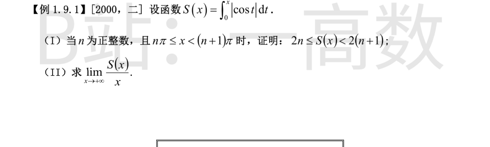
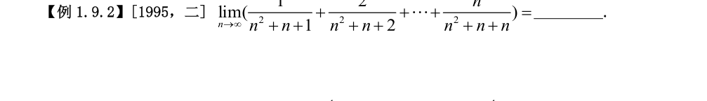
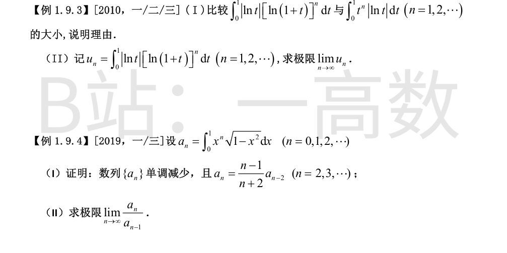

**(I) 证明**
由周期性 |\cos(t+k\pi)|=|\cos t|，每个周期段上积分相等：
$$\int_{k\pi}^{(k+1)\pi}|\cos t|\,dt=\int_0^{\pi}|\cos t|\,dt=\int_0^{\pi/2}\cos t\,dt-\int_{\pi/2}^{\pi}\cos t\,dt=1+1=2,$$
故
$$S(n\pi)=\sum_{k=0}^{n-1}\int_{k\pi}^{(k+1)\pi}|\cos t|\,dt=\sum_{k=0}^{n-1}2=2n.$$
又 |\cos t|\ge 0 连续且在任何正长度区间上不恒为零，故对任意 a<b 有 \int_a^b|\cos t|\,dt>0，即 S(x) 严格单调增加。于是当 n\pi\le x<(n+1)\pi 时
$$S(n\pi)\le S(x)<S((n+1)\pi),$$
即
$$2n\le S(x)<2(n+1).\qquad\blacksquare$$
当 x\in[n\pi,(n+1)\pi) 时，x\to+\infty 当且仅当 n\to\infty。将 (I) 的不等式除以 x>0：
$$\frac{2n}{x}\le\frac{S(x)}{x}<\frac{2(n+1)}{x}.$$
由 n\pi\le x<(n+1)\pi 得
$$\frac{n}{(n+1)\pi}<\frac{n}{x}\le\frac{1}{\pi},\qquad \frac{1}{\pi}=\frac{n+1}{(n+1)\pi}<\frac{n+1}{x}\le\frac{n+1}{n\pi}.$$
令 n\to\infty，两端均趋于 1/\pi，由夹逼准则 n/x\to 1/\pi，(n+1)/x\to 1/\pi。于是两端 2n/x\to 2/\pi，2(n+1)/x\to 2/\pi，再次用夹逼准则得
$$\lim_{x\to+\infty}\frac{S(x)}{x}=\frac{2}{\pi}.$$

记 S_n=\sum_{k=1}^{n}\dfrac{k}{n^2+n+k}。当 1\le k\le n 时
$$n^2+n+1\le n^2+n+k\le n^2+n+n,$$
故
$$\frac{k}{n^2+2n}\le\frac{k}{n^2+n+k}\le\frac{k}{n^2+n+1}.$$
对 k=1,\cdots,n 求和，并利用 \sum_{k=1}^n k=\dfrac{n(n+1)}{2}：
$$\frac{n(n+1)}{2(n^2+2n)}\le S_n\le\frac{n(n+1)}{2(n^2+n+1)},$$
左端即 \dfrac{n+1}{2(n+2)}。当 n\to\infty 时：左端 \dfrac{n+1}{2(n+2)}\to\dfrac12，右端 \dfrac{n(n+1)}{2(n^2+n+1)}\to\dfrac12。由夹逼准则
$$\lim_{n\to\infty}S_n=\dfrac12.$$

先证 0<\ln(1+t)<t（0<t<1）：令 \varphi(t)=t-\ln(1+t)，\varphi(0)=0，\varphi'(t)=\dfrac{t}{1+t}>0（0<t\le 1），故 \varphi(t)>\varphi(0)=0，即 \ln(1+t)<t。
于是对 n\ge 1：
$$0<[\ln(1+t)]^n<t^n\quad(0<t<1).$$
两边同乘 |\ln t|（在 (0,1) 内 |\ln t|>0）：
$$|\ln t|[\ln(1+t)]^n<t^n|\ln t|\quad(0<t<1).$$
两被积函数在 (0,1] 上可积（t\to 0^+ 时 |\ln t| 的奇异性可积，因子 [\ln(1+t)]^n、t^n 均有界），且严格不等式在 (0,1) 内除 t=1/e 一点外处处成立，积分保持严格不等号：
$$\int_0^1|\ln t|[\ln(1+t)]^n\,dt<\int_0^1 t^n|\ln t|\,dt.$$
由 (I) 得
$$0<u_n<\int_0^1 t^n|\ln t|\,dt.$$
分部积分计算右端：
$$\int_0^1 t^n|\ln t|\,dt=-\int_0^1 t^n\ln t\,dt=-\left[\frac{t^{n+1}\ln t}{n+1}\right]_0^1+\frac{1}{n+1}\int_0^1 t^n\,dt=0+\frac{1}{(n+1)^2}=\frac{1}{(n+1)^2},$$
其中边界项：t\to 0^+ 时 t^{n+1}\ln t\to 0，t=1 处 \ln 1=0。
于是
$$0<u_n<\frac{1}{(n+1)^2}\to 0\quad(n\to\infty).$$
由夹逼准则得 \lim_{n\to\infty}u_n=0。
**单调减少**：当 0<x<1 时 x^{n+1}<x^n，而 \sqrt{1-x^2}>0（0\le x<1），故 a_n>0 且
$$a_{n+1}=\int_0^1 x^{n+1}\sqrt{1-x^2}\,dx<\int_0^1 x^n\sqrt{1-x^2}\,dx=a_n,$$
即 \{a_n\} 单调减少。
**递推式**：注意到
$$\mathrm{d}\big[(1-x^2)^{3/2}\big]=-3x\sqrt{1-x^2}\,\mathrm{d}x,$$
当 n\ge 2 时
$$a_n=\int_0^1 x^{n-1}\cdot x\sqrt{1-x^2}\,\mathrm{d}x=-\frac13\int_0^1 x^{n-1}\,\mathrm{d}\big[(1-x^2)^{3/2}\big]$$
$$=-\frac13\Big[x^{n-1}(1-x^2)^{3/2}\Big]_0^1+\frac{n-1}{3}\int_0^1 x^{n-2}(1-x^2)^{3/2}\,\mathrm{d}x.$$
n\ge 2 时边界项为 0（x=1 处 (1-x^2)^{3/2}=0；x=0 处 x^{n-1}=0），故
$$a_n=\frac{n-1}{3}\int_0^1 x^{n-2}(1-x^2)\sqrt{1-x^2}\,\mathrm{d}x=\frac{n-1}{3}\,(a_{n-2}-a_n).$$
整理得 (n+2)a_n=(n-1)a_{n-2}，即
$$a_n=\frac{n-1}{n+2}\,a_{n-2}\quad(n=2,3,\cdots).\qquad\blacksquare$$
由 \{a_n\} 单调减少且 a_n>0 知 0<a_n\le a_{n-1}\le a_{n-2}，从而（把分母换大、不等号反向）
$$\frac{a_n}{a_{n-2}}\le\frac{a_n}{a_{n-1}}\le\frac{a_n}{a_n}=1.$$
由 (I) 的递推式 a_n=\dfrac{n-1}{n+2}\,a_{n-2} 得
$$\frac{a_n}{a_{n-2}}=\frac{n-1}{n+2}\to 1\quad(n\to\infty).$$
由夹逼准则
$$\lim_{n\to\infty}\frac{a_n}{a_{n-1}}=1.$$